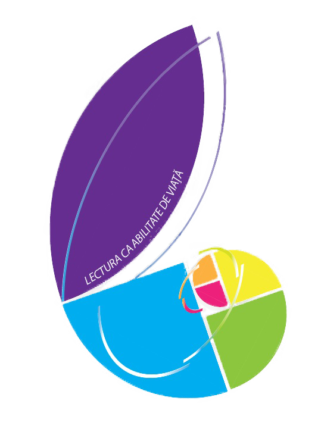

PROGRAM
Elevi
Vineri, 15.04.2016
12:00- 17:00 – Sosirea participanților
17:30 – Deschiderea oficială a olimpiadei – Cinema Victoria
Parteneriat Tiff – proiecție de scurtmetraj și dezbatere
19:30 – 20:30 – Cina
Sâmbătă, 16.04.2016
07:00 – 08:00 – Micul dejun
09:00 - 12:00 - Proba scrisă (A) – Colegiul Național George Barițiu Cluj-Napoca
13:00 – 15:00 – Dejun (două serii)
16:00 – 17:30 – Activitate culturală – Muzeul de Artă
Întâlnire cu scriitori: trei generații în fața criticii. Ștefan Baghiu, Ștefan Manasia, Ion Mureșan și Dora Pavel. Moderator: Alex Goldiș
19:00 - Instructaj privind proba orală în Holul Hotelului SPORT
19:30 - 20:30 – Cina la Cantina Economic, în ture conform planificării cunoscute
Duminică, 17.04.2016
8:00 - prezentarea la Col.Naţ. George Bariţiu
8:30 - 12:00 –Proba orală
13:00 -15:00 – Vizionarea lucrărilor şi depunerea contestaţiilor
14:00 – 16:00 – Dejun (două serii)
15:45 – Preluarea pentru vizita la Facultatea de Litere (din faţa Hotelului SPORT)
15:00 -18:00 – Rezolvarea contestaţiilor
16:00 -17:30 – Vizită Facultatea de Litere
18:00 – Afişarea rezultatelor finale
18.30 - 20:30 – Activitate recreativă și cina (bufet suedez) – Colegiul Național G. Barițiu Cluj-Napoca
Luni, 18.04.2016
07:30 – 08:30 – Micul dejun
10:00 – Festivitatea de premiere – Aula Alexandru Domșa, Facultatea de Construcții
13:30 – 14:30 – Dejun
Plecarea participanților
Comisia Centrala
16.04.2016 12:00 s-au produs urmatoarele modificari in program. Unele dintre ele privesc si comisia centrala.
Sâmbătă, 16.04.2016
19:00 - Instructaj privind proba orală în Holul Hotelului SPORT
19:30 - 20:30 – Cina la Cantina Economic, în ture conform planificării cunoscute
Duminică, 17.04.2016
8:00 - prezentarea la Col.Naţ. George Bariţiu
8:30 - 12:00 –Proba orală
13:00 -15:00 – Vizionarea lucrărilor şi depunerea contestaţiilor
14:00 – 16:00 – Dejun (două serii)
15:45 – Preluarea pentru vizita la Facultatea de Litere (din faţa Hotelului SPORT)
15:00 -18:00 – Rezolvarea contestaţiilor
16:00 -17:30 – Vizită Facultatea de Litere
18:00 – Afişarea rezultatelor finale
18.30 - 20:30 – Activitate recreativă și cina (bufet suedez) – Colegiul Național G. Barițiu Cluj-Napoca
Vineri, 15.04.2016
12:00- 17:00 – Sosirea participanților
17:30 – Deschiderea oficială a olimpiadei – Cinema Victoria
20:00 – Cina, şedinţa tehnică, Hotel Royal
Sâmbătă, 16.04.2016
07:00 – 08:00 – Micul dejun
09:00 - 12:00 - Proba scrisă (A) – Colegiul Național George Barițiu Cluj-Napoca
13:00 – 14:00 – Masa de prânz
15:00 – 19:30 – Evaluarea lucrărilor, Colegiul Național George Barițiu Cluj-Napoca
20:00 – Afișarea rezultatelor la proba scrisă
20:00 – 21:00 – Cina, Hotel Royal
21:00 – 22:00 – depunerea contestațiilor
22:00 – reevaluarea lucrărilor contestate
Duminică, 17.04.2016
07:30 – 08:30 – Micul dejun
09:00 – Afișarea rezultatelor după contestații la proba A
10:00 – 15:00 – Proba orală (B) – Colegiul Național George Barițiu Cluj-Napoca
15:00 – 16:00 – Masa de prânz
17:30 – Afișarea rezultatelor – Colegiul Național George Barițiu Cluj-Napoca
20:00 – Cina, Hotel Royal
Luni, 18.04.2016
07:30 – 08:30 – Micul dejun
10:00 – Festivitatea de premiere – Aula Alexandru Domșa, Facultatea de Construcții
13:30 – 14:30 – Masa de prânz
Plecarea participanților

